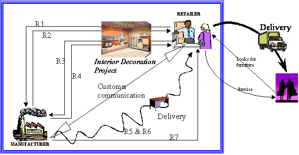
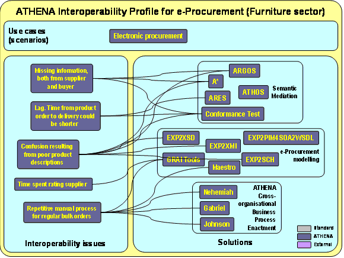

")

Electronic procurement (e-Procurement) profile
Furniture pilot
This is about improving the document flow, messaging and decision-making among core shareholders within the request for quotation (RFQ) and the order flow, including an interior decoration project, integrating Order Management System (OMS), Product Data Management (PDM), and a usual accounting systems for order handling, delivery and invoicing. The Infrastructure architecture is composed of a SAP suite of tools, the ATHENA semantic reconciliation suite and the STEP transformation tools, representing a typical order-supplier CBP with control of business document flows.
The furniture procurement scenario, see figure below, involves four stakeholders: furniture manufacturer, raw-material supplier, retailer and customer. Although the document flow is started by the retailer, the action starts when a costumer looks for furniture at the Retailer’s facilities or website. The costumer browses the catalogue and asks the salesman to obtain a quotation for the desired furniture products.
- The Retailer starts the procurement document flow process by sending to the Manufacturer the R1. Request for Quotation document to obtain the current product price list according to the costumer desires. The information included in the R1 document is mainly composed by a product list with the corresponding specifications such as finishing, handles, fabrics and special measurements or cuts. Additionally, the Retailer might send the R1 document with an interior Decoration Project attached.
- Once the R1 document is at Manufacturer’s side, specifically at the Sales Dept, the internal process regarding to the quotation process.
- To accept the quotation sent by the Manufacturer, the Retailer has to perform the R3. Order Document including a reference to the quotation. The Retailer might include also the decoration project as an attached draft of the ordered products. Once the R3 document arrives to the Sales Dept, the Manufacturer processes the document.
- At this moment, Sales sends to the Production Dept the list of ordered products. This department plans the product manufacturing by calculating the amount of raw material that is necessary to produce the goods. If there is any lack of raw material, Procurement Dept is asked for it.
- Eventually, during the manufacturing process, the Retailer might start a Customer Communication process to know the current status of the order.
- Once the product is manufactured, the different parts of the furniture are packaged. The packages are identified and sent to storage waiting for the shipping and being prepared to be loaded into the transportation.
- While this process is being performed, the Administration Dept prepares the last documents to be sent to the Retailer: R5. Delivery Note and R7. Invoice documents. Additionally, the Production Dept prepares the R6. Packing List which is the product list contained in the R5 broken down in the different identified packages.
- The products are loaded into the transportation and sent to the Retailer accompanied with the R5 and R6 documents. The Retailer signs the R5 and returns it to the Manufacturer who finally sends the invoice (R7).

The different ATHENA solutions used in the implementation of the pilot infrastructure are shown in the figure below are:
- GRAI Tools: Tool to model the internal business processes of the stakeholders involved in the furniture scenario. During ATHENA a link to Maestro was developed which allows GRAI enterprise models to be imported into Maestro.
- Maestro: Tool to model a collaborative environment based on the work done by Enterprise Modelling tools which will help in the development and improvement of the Business Processes of each actor.
- Nehemiah: Tool to simulate the CBP model developed under Maestro.
- Gabriel: Tool to orchestrate the Process and the Messages.
- Johnson: System which will act as a kind of Outlook. This tool is going to act as a front-end of the different actors and will have uploaded the Web Services to receive and send documents.
- A*: Semantic Annotation Tool used to annotate different instances of the same document to allow the reconciliation and the matching between different documents against the same concepts.
- ARGOS: Rules Generation Tool used to generate the run-time tools for checking and annotating documents.
- ARES: Run time environment. This tool will be uploaded into Johnson as a plug-in, so this will allow the reconciliation and annotation on run-time the documents. Additionally ARES will help in validating the semantic of the documents against the ontology.
- Conformance Test: Tool to perform the validation of the documents both syntactically and basic-semantically against the XML Schema documents. The CT tool, as ARES, will be uploaded into Johnson to allow all the users to check the validity of documents.
- EXP2XSD, EXP2SCH, and EXP2XMI: These transformation tools will be used for transforming the EXPRESS schemas into a more machine-understandable language, such as XML

Apart from these tools, AIDIMA has used the following ATHENA solutions which are not related to any Interoperability Issue in particular. These tools are:
- ATHOS: ATHENA Ontology Management System to create and manage ontologies. Under the scenario it has been uploaded the furniture ontology developed under the funStep projects.
- EXP2PIM4SOA2WSDL: STEP transformation tool used for transforming the EXPRESS schemas into Web services descriptions.